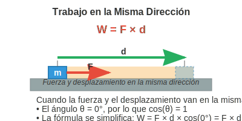
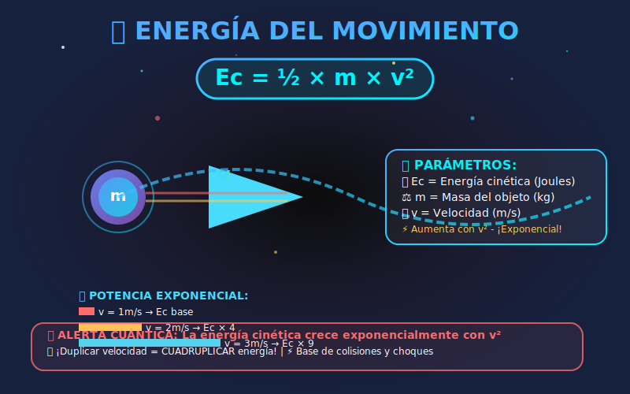
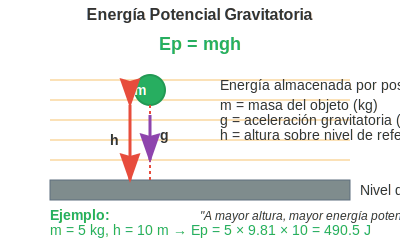
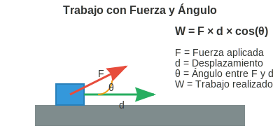
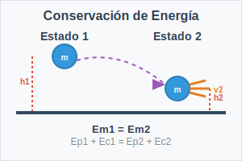

Prueba de Colores y Legibilidad Mejorada
La fuerza aplicada al objeto en movimiento
La distancia recorrida por el objeto
Fórmula: W = F × d × cos(θ)
Unidades: J (Joules)
El trabajo es la cantidad de energía transferida por una fuerza cuando mueve un objeto.
Fórmula: Ec = ½mv²
Unidades: J (Joules)
La energía cinética es la energía que posee un objeto debido a su movimiento.
Fórmula: Ep = mgh
Unidades: J (Joules)
La energía potencial gravitatoria es la energía almacenada en un objeto debido a su posición.
Fórmula: W = F × d × cos(θ)
Unidades: J (Joules)
Cuando la fuerza no está en la misma dirección que el movimiento, se debe considerar el ángulo.
Principio: La energía no se crea ni se destruye, solo se transforma
Fórmula: E₁ = E₂ (energía inicial = energía final)
Este principio fundamental establece que la energía total de un sistema cerrado permanece constante.
Este es un párrafo normal que debe ser fácil de leer.
Este es texto atenuado que debe seguir siendo legible.
Este es un enlace que debe ser visible